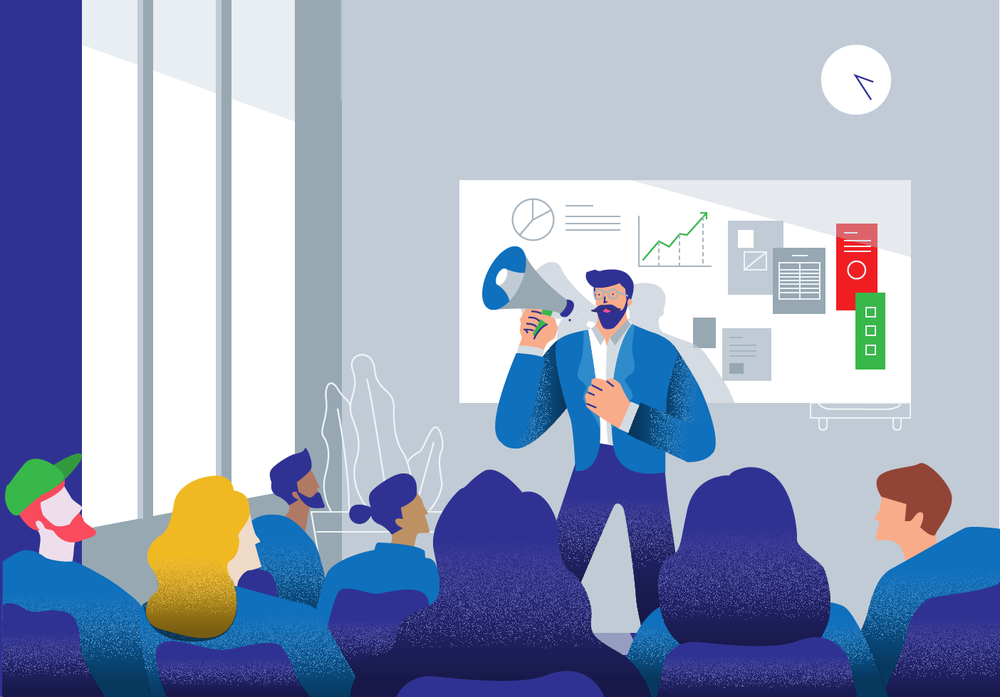
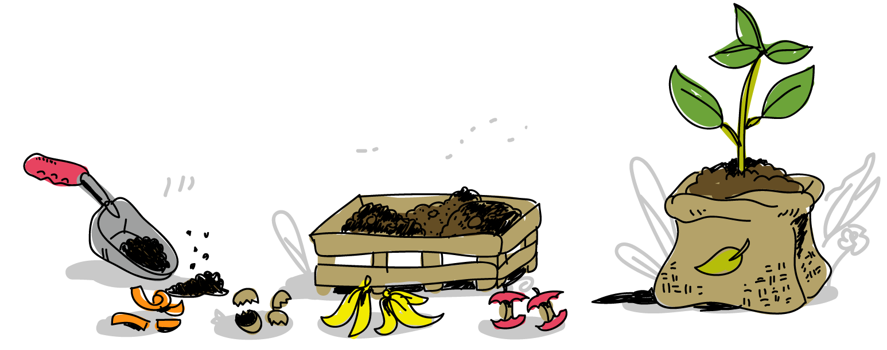
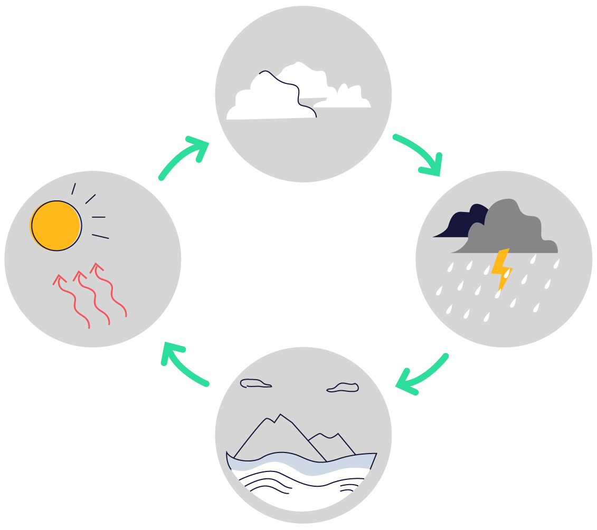

We view the world as a designed environment and operate from within it. We are actively engaged, not observing from outside.
Everything built is a set of decisions. Most have lost their reasoning by the time you meet the result. This page is the record of how we go about making decisions. It's here so it can be pointed at, argued with, and held against our work.

The canopy gets the photograph. The soil does the labor.
There is a picture of the green future you have probably seen without having a name for it: a white city terraced with greenery, vines over the balconies, a clean tram gliding past a vertical farm, always at golden hour. It has a tell. You can never find the soil in it. The plants are lush and total, and the brown part, the part that rots, is cropped out of frame.
Soil is where an ecosystem does its work. Decomposition — taking what died and turning it back into what the next thing will need. Almost none of that photographs well, which is why it keeps getting left out of the render. We wrote about this at length in Solar-Punk Has No Soil.
We would rather be the soil. Most of what we do happens underneath, before there is anything to look at. Interviews. Counting. Taking a confident idea apart to find the portion of it that survives contact with a real person. Research is decomposition — you break down something dead or untested, an assumption or a launch that failed or forty pages of notes, into what the next thing can grow from.
It sets what we ask of the things we help build, too. What does this leave behind. Can the person who owns it repair it. What happens to it when it dies.

Three words, and two of them argue.
They are not three parallel virtues. Empathy is an input, the part that describes what we do before anything is designed. Autonomy and Unity are conditions the finished thing has to meet: one names what we owe the person holding the product, the other what we owe everybody standing behind them.
Those last two do not reliably agree. The person in front of you may want their whole address book uploaded, because it makes the product better for them, and nobody in that address book was asked. Elsewhere on this site we put it as enhancing the agency of the individual provided that it also supports the collective, which sounds settled right up until the provided that has to carry a real decision.
We have not resolved it in advance. What we do is refuse to let either word win by default. In practice the answer usually turns on whether the person is acting from their own volition or has just been handed the one easy path. The three words are what keeps a case from being skipped.
A procedure, not a feeling. Interviews, observation, and the discipline of recording what people do rather than what they say they do. It is a set of methods with a failure rate, and it is learnable.
Rules out: deciding what someone needs without asking them.
The person using the product acts from their own volition and endorses what they are doing. That includes the ability to stop, to leave, and to go elsewhere with what belongs to them. Their goals outrank our metrics.
Rules out: manufactured urgency, obstructed exits, and defaults chosen against the person who has to live with them.
A product is answerable to more than the person who built it. Something that serves one group at everyone else's expense has moved a cost rather than solved a problem, and the cost is still being paid by somebody downstream.
Rules out: designing for a segment and treating the spillover as somebody else's problem.
How we work on anything, including this page.

These are four named stages run in order. They are a practice rather than a framework, which mostly means we perform them on our own work instead of selling them to anyone.
The first deliberate encounter with something, before any attempt to understand, judge, or change it. Not analysis — finding north. You hold off on solving and ask what you are looking at, what shape it has, what does not belong, where your attention goes on its own, and what you brought with you.
Before you walk the path, learn which way you are facing.
A thought that has not been made real through action. An idea in the mind is incomplete; it becomes performed when someone tests it, says it, builds it, teaches it, or otherwise gives it contact with the world. An unperformed cognition is neither false nor useless. It is unverified potential. The most expensive products is a good build of the wrong thing.
Do not confuse the thought you can imagine with the thought the world can withstand.
Letting another mind encounter your reasoning without you carrying it across for them. The peer is a neighboring consciousness rather than an authority. It exists against private certainty — the belief that an idea is clear because its author knows what they meant.
It runs twice. First in imagination: someone whose work you respect is sitting across the table with a cup of tea, and you can hear them saying the same words back. If you cannot hear it, the thing is not ready to leave the desk. If you can, you are on the right track, so take it to them — hand it over and ask what they understand without your help. When they misunderstand something important, the failure belongs partly to the thing.
Share before concluding.
What trails behind stated knowledge. The reservations, the intuitions, the connections not yet articulated, the sense that there is more here than can currently be explained. A person is wiser for having learned to notice it rather than for having eliminated it. Knowing is what can be stated; the knowing tail is what the mind knows before it knows how to say it.
Listen to what remains.
The fourth pass returns to the first. What went unexplained is where the next orientation starts, which makes this a cycle instead of a checklist. Stopping there treats the leftovers as waste.
Nothing here is finished. It is composted.
Markets were designed. The damage they do is neither a moral failure of the people inside them nor a fact of nature — it is a design running as specified. What is easy to count goes on the invoice, and the rest is absorbed by someone who never agreed to it.
Designs get redesigned. That is the work, and it is why a design firm is a reasonable place to attempt it.
So we build the proof that a business can pay for itself and pay back what it takes. Profit is the evidence rather than the compromise: a good thing that runs on a subsidy has an expiry date, and a thing that never had to survive the market has not changed it. Everything built draws on something — attention, data, energy, minerals, somebody's afternoon. The ones worth building put it back.
We do not have all of this working yet, and we would rather say where it breaks than claim otherwise. The costs currently left off the invoice are going to get priced, by regulation or by physics, and the businesses built on their staying free will find that out together.
Orient before interpreting.
Perform before believing.
Share before concluding.
Listen to what remains.
Bring us a project — or, if you build things yourself, bring us an argument.